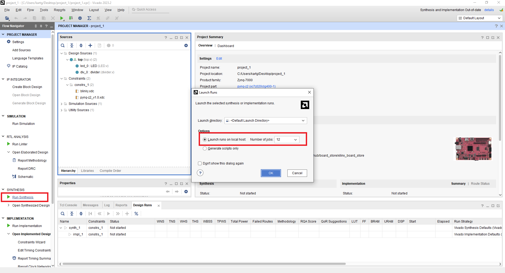
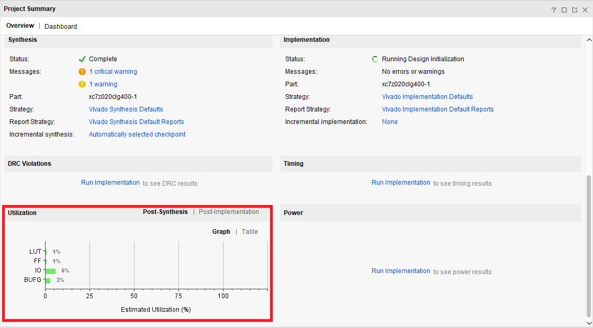
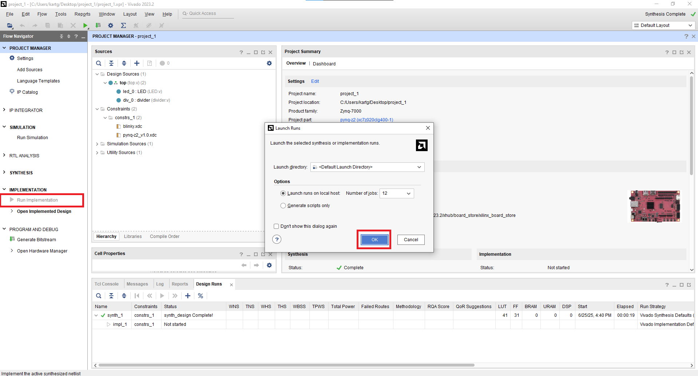
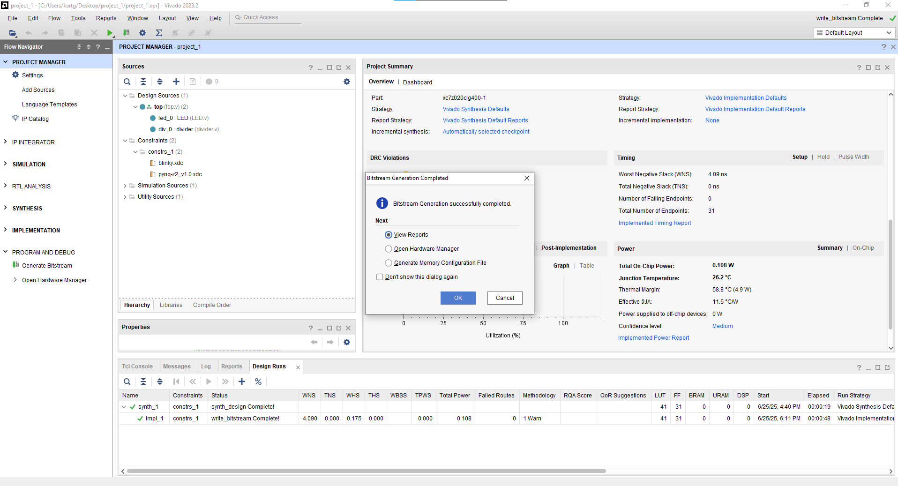

Part3 FPGA Design Flow
Xilinx FPGA 設計流程可以分為以下 6 個步驟：
-
RTL Design
- 使用 Verilog/VHDL 撰寫 module
-
Behavior Simulation
- 透過 Testbench 測試功能邏輯是否正確
-
Synthesis
- 將 RTL 轉換為邏輯元件（如
LUT、FF、MUX、CLB等），輸出成 Netlist
- 將 RTL 轉換為邏輯元件（如
-
Implementation
- 包含 Placement 與 Routing 兩個階段，將合成後的邏輯元件實際配置到 FPGA 上，如
CLB、Routing Channel、IO Bank等
- 包含 Placement 與 Routing 兩個階段，將合成後的邏輯元件實際配置到 FPGA 上，如
-
Generate Bitstream
- 產生 bitstream (
.bit) 檔，以供燒錄到 FPGA 中
- 產生 bitstream (
-
Program & Debug
- 將 bitstream 燒入至 FPGA，並使用 ILA (Integrated Logic Analyzer) 等工具進行邏輯分析與即時驗證
[!NOTE] Synthesis 電路合成
Synthesis 負責將 RTL 程式轉換成可由 FPGA 實際執行的邏輯元件，例如 LUT (Look-Up Table)、Flip-Flop、MUX 等。
Synthesis 的輸出是 Netlist，描述了邏輯元件之間的連接關係， 供下一步的 Implementation 階段使用。
[!NOTE] Implementation 電路實作
Vivado 在 Implementation 階段會做以下兩個工作：
- Place Design: 將邏輯元件放置到 FPGA 上的具體位置
- Route Design: 完成所有訊號間的連線，並考量時序要求
[!NOTE] FPGA 與 ASIC Synthesis 的差異
雖然 FPGA 與 ASIC 皆是使用 RTL（Verilog/VHDL）程式來合成，但因為兩者的目標硬體架構不同，導致合成結果有所差異：
FPGA Synthesis：
- 目標為 FPGA 元件，如
LUT、FF、BRAM、DSP等- 合成結果會映射到 FPGA 上面真實存在的實體邏輯資源
ASIC Synthesis：
- 目標為 Standard Cell Library，如
AND2_X1、DFF_X1等- 產出 gate-level netlist 與 SDF 延遲檔，供 Place & Route (P&R) 與 Gate-level simulation 使用
Part 3.1 Add Design Source / Constraint Files
-
參考 Part 1 建立一個新 Project
-
將
/RTL與/xdc目錄下的檔案加到 project 中，可參考 Part 2- 點選
Add or create design sources，加入/RTL內的top.vLED.vdivider.v - 點選
Add or create constraints，加入/xdc內的blinky.xdcpynq-z2_v1.0.xdc
- 點選
-
成功的話 Project Hierarchy 應該會如下所示：

[!NOTE] Constraint 的用途
在 Xilinx FPGA 中，Constraint 檔案副檔名為
.xdc，他的主要功能是定義設計的時序與 I/O 限制：
- Clock Constraints： 定義時脈的頻率與來源，例如
create_clock- I/O Pin Assignment：定義實體腳位對應的 signal，例如將
clk對應到W5- I/O Standards：設定電壓與訊號標準，如
LVCMOS33Constraint 是 Implementation 階段中 時序分析、資源配置 的重要依據。
若沒有正確的
.xdc，Vivado 可能無法正確佈線，造成 Timing Violation 等問題。
[!TIP] Constraint Set
Vivado 支援使用 Constraint Set 來管理多組時序與 I/O 限制設定
未來在面對大型設計時，可以根據不同模組與需求建立對應的 Constraint Set，進行驗證與切換設計條件。
Part 3.2 Synthesis
-
執行 RTL Synthesis：點選左側
SYNTHESIS→Run Synthesis在彈出的設定視窗中，Vivado 會詢問你希望分配多少執行緒來執行合成。
可以依照自己電腦的 CPU 核心數選擇，分配越多執行緒，Synthesis 所需時間通常會越短。

-
檢視合成後的結果：Synthesis 完成後，可以點擊左側
SYNTHESIS→Open Synthesized DesignSynthesis Report

- Report Timing Summary：預估時序是否符合目標頻率
- Report Utilization：預估使用多少 CLB、LUT、FF 等邏輯資源
- Report Power：估算功耗
- Report DRC (Design Rule Check)：檢查邏輯結構是否存在問題
[!WARNING] 因為尚未經過 Placement 與 Routing，缺少實體路徑與實際延遲，因此 Timing 類報告只是基於 Netlist 的預估
-
檢視 Synthesis 後的電路：點選左側的
SYNTHESIS→Open Synthesized Design→SchematicSchematic

-
LUT6 (6-input Look-Up Table)
- LUT 是組成 FPGA 設計邏輯的核心之一，Vivado 會自動將 RTL 中的邏輯運算映射為 LUT
- LUT6 有 6 個輸入，可以實現任何 6-input 的布林函數

-
FDCE (Flip-Flop with D input, Clock, Clear, Enable)
- 帶有 Clear 與 Enable 訊號的 D 型正緣 Flip Flop

-
-
點選左上方
Project Manager後跳出的Project Summary可以看到 Utilization， 其他資訊則要等到 Implementation 後才能看到Project Summary

Part 3.3 Implementation
-
執行 Implementation：點選左側
IMPLEMENTATION→Run Implementation
-
檢視電路實際擺放位置：Implementation 完成後，點選左側的
IMPLEMENTATION→Open Implemented DesignImplemented Design

-
在 Project Summary 中可以看到 Implementation 的結果，包含 Timing、Utilization、Power 等資訊
Project Summary

[!NOTE] Implementation 階段 Vivado 會統整出:
- Power Estimation：預估功耗
- Timing Analysis：分析 Setup/Hold Timing 是否滿足設計要求
- DRC（Design Rule Check）：檢查佈線、資源使用是否符合規則
- Utilization Report：彙整資源使用情況（LUT、FF、BRAM 等）
- Schematic Viewer：可查看實體配置後的電路圖
Part 3.4 Generate Bitstream
- 生成 Bitstream：點選左側
PROGRAM AND DEBUG→Generate Bitstream

完成後會有以下畫面

[!NOTE] Bitstream
Bitstream (
.bit/.bin) 是一個二進位檔案，供燒錄到 FPGA 中其中包含了 FPGA 的配置資料：
- 邏輯元件的對應與連接 (from Netlist)
- Placement & Routing 結果
- I/O 配置與 Constraint (from
.xdc)下圖為 XC4000 系列的 Fast Carry 硬體架構。
可以看到圖中 M 代表多工器（MUX），Bitstream 會被用來控制這些 MUX 的選擇路徑
藉此設定每個邏輯元件與連線的實際行為與配置

Part 3.5 Program to FPGA

-
將 FPGA 與電腦連接 (將 Micro USB 插上 Port 2)
-
將 8 號區的 Jumper 插至
JTAG的位置[!NOTE] JTAG (Joint Test Action Group)
JTAG 是一種標準的 Debug 與燒錄介面，主流 FPGA（如 Xilinx、Intel）都支援此標準。
FPGA 在使用
JTAG模式下進行配置時，會根據 IEEE 1149.1 標準進行串列資料傳輸。可將我們的 Bitstream 透過
Boundary-Scan的方式燒入進去板子中 -
打開開關 (3號區)
[!CAUTION] 關機時一定要先關閉開關才可以拔除電源線
-
開啟 FPGA 後，回到 Vivado 並點選
Open Hardware Manager→Open Target→Auto Connect
-
等待 Vivado 偵測到
xc7z020(Pynq-z2 所使用的 FPGA 晶片組) 後按下Program device，再點選Program
-
燒錄完成後，可以參考 RTL Code 觀察 Switch 和 LEDs 的關係